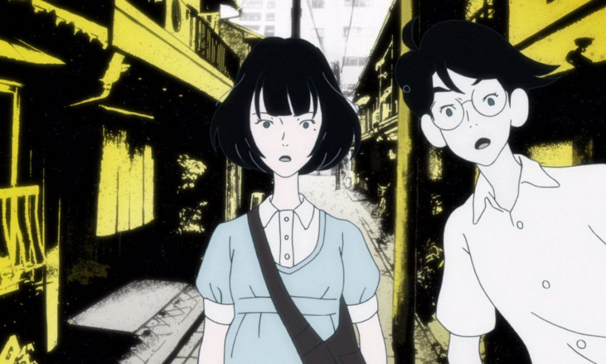
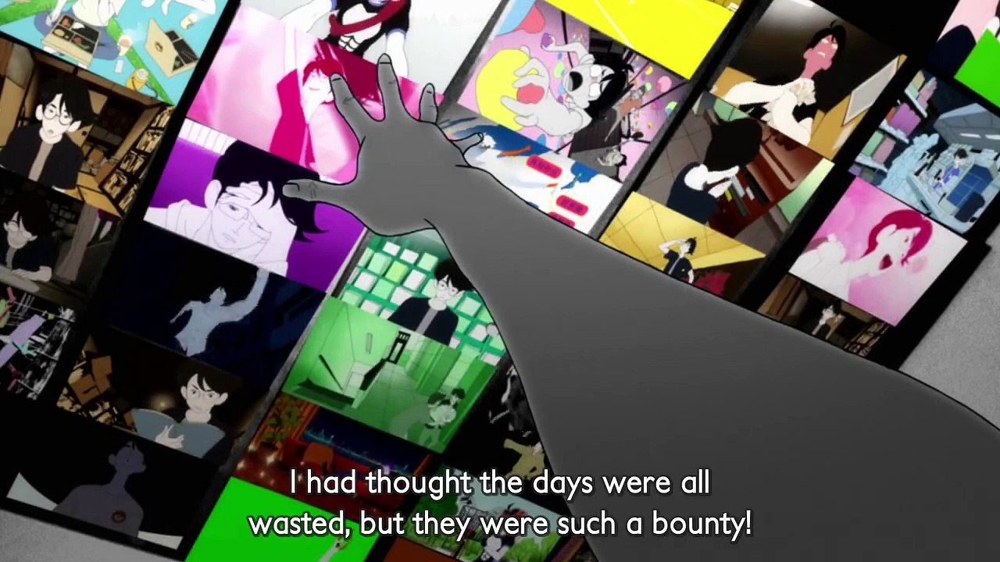

Yojōhan Shinwa Taikei
The Tatami Galaxy (四畳半神話大系, Yojōhan Shinwa Taikei, literalmente: «Crónicas mitológicas de los 4 Tatamis y medio») es una novela universitaria japonesa de 2004 escrita por Tomihiko Morimi y publicada por la editorial Ohta. Su narrador en primera persona es un estudiante de una universidad de Kioto que recuerda las desventuras de sus años anteriores de vida en el campus, y cada uno de los cuatro capítulos tiene lugar en universos paralelos en los que está inscrito en una sociedad universitaria diferente.
Acerca

Una adaptación televisiva de animación fue producida por Madhouse, con Masaaki Yuasa como director, Makoto Ueda como guionista y Michiru Ōshima como compositor
Personajes
Watashi y Akashi
Final
El mejor final de la historia y de todo en general